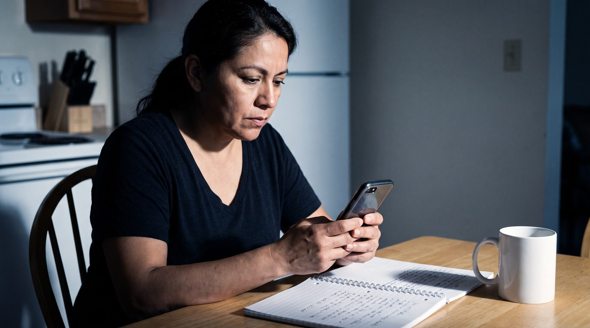

¿Califica usted?
Unas preguntas y sabe si puede solicitar hoy, qué le falta, o si su caso necesita abogado.
Cuatro herramientas en español para hacer su trámite de naturalización usted mismo.
GratisSin registro, sin instalar nada. En su teléfono y su computadora.

ELEGIBLES HOY
8.5 M
residentes permanentes pueden solicitar. Solo 820 mil lo hacen al año.
Esto no reemplaza a un abogado. Si su caso es sencillo, y la mayoría lo son, usted puede hacer el trámite por su cuenta. Si tiene complicaciones, se lo decimos y le ayudamos a buscar quién lo represente.
Los demás productos solo preparan el examen. El examen es la tercera.
Unas preguntas y sabe si puede solicitar hoy, qué le falta, o si su caso necesita abogado.
Los siete pasos del trámite con seguimiento y recordatorios, del formulario al juramento.
El banco oficial de 128 preguntas, agrupado por tipo de memoria y con gráficos que anclan las respuestas.
Lectura en voz alta, escritura al dictado y las preguntas sobre su propia solicitud.
TIEMPO DE RESPUESTA
3 min
es lo que toma saber si usted ya califica.
USCIS las ordena por tema, que sirve para clasificar y no para aprender. Pase el cursor por un grupo para ver su gráfico de memoria.
33 respuestas traen un gráfico. Son las más difíciles de fijar: los mandatos de 2, 4 y 6 años, la suma del Congreso, las enmiendas que se confunden entre sí. La memoria visual retiene mejor que el texto solo.
Cada punto es una de las 128 preguntas del banco oficial.
La tarifa del formulario es obligatoria. El abogado, en un caso sencillo, no lo es.
USCIS establece que no se necesita abogado para presentar el Formulario N-400. En junio de 2026 el gobierno propuso subir la tarifa en papel a $1,330 y eliminar las exenciones; todavía no está vigente.
Esta comunidad ha sido estafada muchas veces. Preferimos ser incómodamente claros.
Los trámites sencillos consumen tiempo y dejan poco margen. Nosotros atendemos esos, y cuando aparece un caso con complicaciones reales, su despacho es el que aparece.
Antecedentes penales, ausencias prolongadas, problemas fiscales o dudas sobre residencia continua.
Entrégueles la herramienta de estudio y llegan a la entrevista sabiéndose el examen.
La aplicación lleva su nombre y su logotipo cuando la usan sus clientes.
Pagamos publicidad, no repartimos honorarios. Es la única forma legal de hacerlo.
CÓMO CLASIFICAMOS
Nunca damos una opinión legal sobre estos casos. Solo los identificamos y le decimos a la persona que necesita un abogado. Ante la duda, siempre mandamos al abogado.
La información del proceso es gratuita y lo seguirá siendo. Lo que se paga es el seguimiento y la práctica.
Para empezar y ver si califica
$0
para siempre, sin tarjeta
Para hacer el trámite de principio a fin
$29 una vez
sin suscripción, sin renovación
¿Es usted abogado o atiende una organización? La aplicación lleva su marca y sus clientes la usan sin costo adicional, por una tarifa fija de $40 al mes.
Conocer másEn la mayoría de los casos, sí. USCIS dice expresamente que no se necesita abogado para presentar el Formulario N-400. Ahora bien, «la mayoría» no es «todos»: si usted tiene algún arresto, salió del país por más de seis meses seguidos, debe impuestos o manutención, o tiene dudas sobre su residencia continua, sí necesita un abogado. La primera herramienta le dice en cuál de los dos grupos está.
Existe un banco oficial de 128 preguntas de educación cívica. En la entrevista el oficial le hace hasta 20 de esas preguntas y usted debe contestar correctamente 12 para aprobar. Además hay una prueba de inglés: leer una oración en voz alta, escribir una al dictado y conversar sobre su solicitud. Esta versión rige para las solicitudes presentadas desde el 20 de octubre de 2025.
No. Funciona desde el navegador de su teléfono y de su computadora, sin descargar nada y sin ocupar espacio. Puede empezar en el teléfono y seguir en la computadora. Tampoco consume muchos datos.
Por regla general el examen es en inglés, pero hay excepciones por edad y tiempo de residencia. Si tiene 50 años o más y lleva 20 como residente, o 55 o más y lleva 15, puede presentar la parte de educación cívica en español con intérprete. Si tiene 65 o más y lleva 20 años de residencia, además estudia una lista más corta. La primera herramienta le dice si le toca alguna de estas excepciones.
Su avance se guarda en su propio dispositivo. No le pedimos número de seguro social, número de extranjero ni datos de su caso. No vendemos información, no usamos rastreo publicitario y no tenemos ninguna relación con agencias del gobierno. No podemos afectar su caso ni para bien ni para mal.
No pedimos registro ni tarjeta para empezar. Si resulta que necesita un abogado, también se lo decimos.